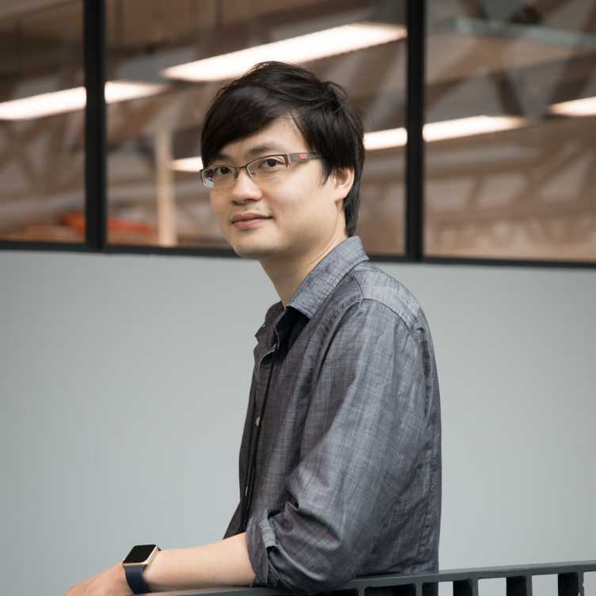

Invited Speakers & Panelists
All speakers are confirmed and will present in person.
Jia Li
Project Numina
Jia Li is the Founder of Project Numina, an open-source organization dedicated to advancing AI for mathematics. He previously served as a researcher at Mistral AI and was the Founder and CTO of Cardiologs, an AI-driven medical diagnostics company founded in 2014 and acquired by Philips in 2022. At Project Numina, he leads the development of large-scale language models for mathematical reasoning and formal theorem proving, including Kimina-Prover, the first large language model designed specifically for formal reasoning in proof assistant environments. Numina's models won the first AIMO Progress Prize awarded by the AIMO Committee. His work focuses on building open, verifiable AI systems for formal mathematics and scientific discovery.
Dawn Song
UC Berkeley
Dawn Song is a Professor in Computer Science at UC Berkeley and Co-Director of Berkeley Center for Responsible Decentralized Intelligence. Her research interests lie in AI safety and security, Agentic AI, deep learning, and security and privacy. She is the recipient of the MacArthur Fellowship and the Guggenheim Fellowship, and has been recognized as Most Influential Scholar in computer security. She is an ACM Fellow and IEEE Fellow.

Emily First
Rutgers University
Emily First is an Assistant Professor in Computer Science at Rutgers University. Her research focuses on AI for software engineering and programming languages, particularly leveraging AI for theorem proving. She works on creating tools to automatically generate proofs and lemmas in proof assistant languages such as Rocq, Isabelle/HOL, and Lean, and designs effective interfaces for human-AI interaction. She completed her PhD at UMass Amherst and was a postdoctoral researcher at UC San Diego.
Yinya Huang
ETH AI Center, ETH Zurich
Yinya Huang is a Postdoc Fellow at the ETH AI Center, ETH Zurich. She received her Ph.D. in Computer Science from Sun Yat-sen University. Her research focuses on AI for mathematics and science, with emphasis on mathematical reasoning, formal theorem proving with LLMs, and reliable machine learning. She has published in top venues including TPAMI, NeurIPS, ICLR, ACL, and EMNLP, and is a recipient of the 2025 ETH Career Seed Award and the 2024 ACM SIGCSE China Excellent Doctoral Dissertation Award.
Leonardo de Moura
AWS / Lean FRO
Leo is a Senior Principal Applied Scientist in the Automated Reasoning Group at AWS. In his spare time, he dedicates himself to serving as the Chief Architect of the Lean FRO, a non-profit organization that he proudly co-founded alongside Sebastian Ullrich. He is also honored to hold a position on the Board of Directors at the Lean FRO, where he actively contributes to its growth and development. Before joining AWS in 2023, he was a Senior Principal Researcher in the RiSE group at Microsoft Research, where he worked for 17 years starting in 2006. Prior to that, he worked as a Computer Scientist at SRI International. His research areas are automated reasoning, theorem proving, decision procedures, SAT and SMT. He is the main architect of several automated reasoning tools: Lean, Z3, Yices 1.0 and SAL. Leo's work in automated reasoning has been acknowledged with a series of prestigious awards, including the CAV, Haifa, and Herbrand awards, as well as the Programming Languages Software Award by the ACM. Leo's work has also been reported in the New York Times and many popular science magazines such as Wired, Quanta, and Nature News.

Sorrachai Yingchareonthawornchai
ETH Zurich
Sorrachai Yingchareonthawornchai is a Junior Fellow at the Institute for Theoretical Studies, ETH Zurich and Tech Lead of CSLib. His research interests lie in the design of fast graph algorithms, combinatorial optimization, and combinatorics of computation. He earned his Ph.D. in Computer Science from Aalto University in 2023, and his doctoral work was recognized with the Doctoral Thesis Award 2023 from Aalto University's School of Science. Previously, he was a postdoctoral researcher at the Hebrew University of Jerusalem and a Simons-Berkeley postdoctoral fellow at UC Berkeley.
Joseph Tooby-Smith
University of Bath
Joseph Tooby-Smith is a Lecturer (Assistant Professor) in Computer Science at University of Bath. He started his academic career as a high-energy physicist working on higher categories and their applications in physics. His research now focuses on interactive theorem provers and their applications in the physical sciences. He is the founder and maintainer of the PhysLean project.
Siyuan Guo
University of Cambridge / MPI-IS
Siyuan Guo is a PhD candidate in Machine Learning jointly at the University of Cambridge and the Max Planck Institute for Intelligent Systems. Her research focuses on the physics of learning, causal inference, and AI for scientific discovery. She has published at top-tier venues with 1 oral and 2 spotlight presentations. Her research has been recognized with honors including MIT EECS Rising Star and the G-Research PhD Prize.